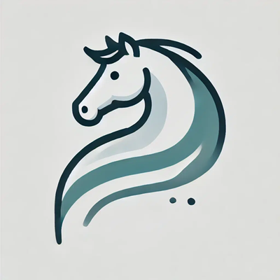

Co to jest grafika wektorowa?
Grafika wektorowa to rodzaj grafiki komputerowej,
która opiera się na matematycznym opisie figur geometrycznych, takich jak linie,
krzywe, kształty czy wielokąty. W przeciwieństwie do grafiki rastrowej (bitmapowej),
nie składa się z pikseli, tylko z punktów, krzywych i linii,
które można dowolnie skalować bez utraty jakości.
Zalety:
1. Skalowalność – można powiększać lub pomniejszać bez utraty jakości.
2. Mała waga pliku – szczególnie przy prostych projektach.
3. Edytowalność – łatwa zmiana kolorów, kształtów i rozmiarów.
4. Idealna do druku i projektowania – szczególnie logo, ikony, znaki graficzne.
Wady:
1. Nie nadaje się do zdjęć i skomplikowanych tekstur – nie odwzoruje dobrze szczegółów jak grafika rastrowa.
2. Złożone obrazy mogą być trudniejsze do stworzenia – wymaga więcej pracy przy skomplikowanych ilustracjach.
3. Nie każdy program obsługuje grafikę wektorową – trzeba używać specjalistycznych narzędzi.
Zastosowanie grafiki wektorowej
1. Tworzenie logotypów
2. Ilustracje i rysunki techniczne
3. Mapy, schematy, infografiki
4. Projektowanie czcionek
5. Animacje 2D
6. Strony internetowe (ikony SVG)
7. Projekty do druku: wizytówki
Najpopularniejsze programy:
1. Adobe Illustrator – profesjonalne narzędzie do tworzenia i edycji grafiki wektorowej.
2. CorelDRAW – zaawansowany program graficzny, często wykorzystywany w poligrafii.
3. Inkscape – darmowy i otwartoźródłowy program, bardzo popularny wśród początkujących i zaawansowanych użytkowników.
4. Affinity Designer – alternatywa dla Illustratora, coraz bardziej popularna.
5. Gravit Designer – narzędzie online i desktopowe, również darmowe w podstawowej wersji.
6. Figma i Sketch – wykorzystywane głównie w projektowaniu UI/UX (interfejsów użytkownika), także oparte na wektorach.
Typowe rozszerzenia plików wektorowych:
1. .svg (Scalable Vector Graphics) – popularny format do internetu.
2. .ai (Adobe Illustrator) – natywny format Illustratora.
3. .eps (Encapsulated PostScript) – często używany w druku.
4. .pdf – może zawierać grafikę wektorową.
5. .cdr – natywny format CorelDRAW.
6. .fig – pliki z Figmy.
7. .sketch – pliki programu Sketch.

